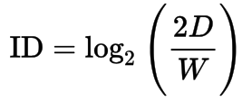
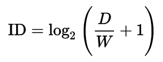

Fitts's Law is a predictive model of human movement established by Paul Fitts in 1954. In Human Computer Interaction, it is typically applied to the movement through user interface using a cursor or any type of pointer. The law predicts that the time required to move to a target is a function of the distance to the target divided by the size of the target.
Fitts proposed the index of difficulty (ID) of the task which depends on the distance to the target and the width of target. Fitts's ID is given by: 
The form most frequently used in the Human-Computer Interaction was given by Scott MacKenzie and is called Shannon formulation given by:  where D is the distance to the target, W is the target's width, and ID is the Index of Difficulty.
Below is the experimental test setup for Fitts law. The test follows ISO Standard (ISO 9241-9:2000). The test setup allows user to select from 2 different target sizes and 3 different target distances.
randomize after round
Select size of target:
15
60
Select distance to target:
100
250
400
Data Sets:
Figure 1: Experiment Area: Click the target circle and avoid missing the target.
Movement Time over ID
Figure 2: Time in ms over Index of Difficulty for each movement.
Throughput over ID
Figure 3: Throughput over Index of Difficulty for each movement.
Plots with average Time and Throughput
Movement Time over ID
Figure 4: Average Time in ms over Index of Difficulty.
Throughput over ID
Figure 5: Average Throughput over Index of Difficulty
Update plots before exporting data